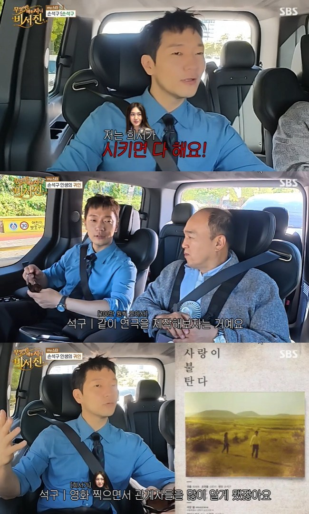
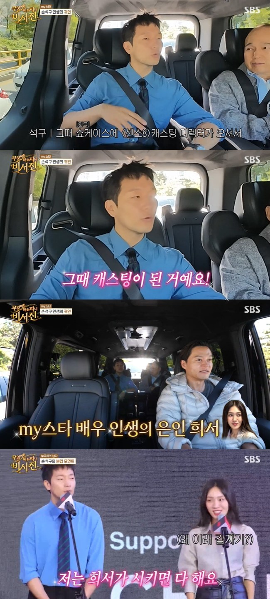
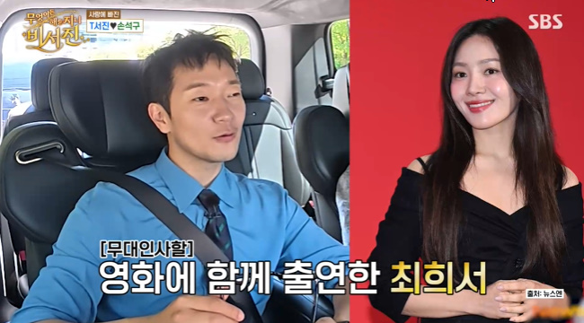

손석구 최희서 은인, 오디션을 바꾼 한마디
손석구 최희서 인연이 이렇게 깊었네요. 함께 연극을 만들던 친구가 오디션을 보도록 등을 밀어줬고, 손석구는 그 고마움을 무대 위에서도 전했는데요. 두 배우가 나란히 선 모습 뒤에 어떤 시간이 있었는지 궁금해져요. 연극 제작부터 센스8, 영화로 이어진 두 사람의 이야기를 정리해봤습니다.
손석구 최희서, 친구를 은인으로 소개한 이유
손석구 최희서 이야기는 무엇이든 해줄지니-비서진에서 공개됐어요. 손석구는 최희서를 오랜 친구이자 자신에게 도움을 준 사람으로 소개했는데요. 부산국제영화제 일정을 위해 이동하는 길에 함께 영화에 출연한 최희서의 이야기가 나왔어요. 단순히 친하다는 말에 그치지 않고, 연기를 이어갈 수 있게 도왔던 구체적인 일화를 꺼냈어요. 잘 알려진 배우의 이름 뒤에 또 다른 배우의 응원이 있었다는 점이 반갑게 느껴집니다.
이야기에는 친구의 제안을 믿고 움직였던 시간과 그 결과를 기억하는 마음이 함께 들어 있어요. 저는 이런 인연을 들으면 성공한 모습보다 그 자리에 오기 전의 선택이 더 궁금해져요. 혼자 고민하던 순간에 누가 어떤 말을 해줬는지, 그 말을 듣고 실제로 무엇을 했는지가 사람의 이야기를 풍성하게 만들어주잖아요. 손석구가 최희서를 은인으로 부른 데에도 서로 함께 행동했던 경험이 자리하고 있었네요.
손석구 최희서 인연에는 직접 만든 연극이 있어요
최희서는 집에만 있지 말고 함께 연극을 제작해보자고 제안했어요. 두 사람은 자신들의 연기를 보여줄 수 있는 무대를 만들었고, 영화 작업으로 알게 된 관계자들도 초대했어요. 완성된 작품에 캐스팅되기를 기다리는 것에서 한 걸음 더 나아가 스스로 보여줄 자리를 마련한 셈이네요. 공연을 준비한 과정이 사람을 만나고 다음 작업으로 이어지는 계기가 됐다는 점이 흥미로워요.
연극 제작이라는 말을 들으면 규모부터 상상하기 쉽지만, 이 일화의 핵심은 자신들이 할 수 있는 방식으로 무대를 만들었다는 데 있어 보여요. 배우가 연기를 보여주고, 그 모습을 누군가에게 직접 전하는 자리를 마련한 거죠. 저는 무대 밖에서 이어지는 이런 준비 이야기가 좋더라고요. 관객에게 보이는 건 완성된 공연이지만, 그 공연을 시작하기로 마음먹는 데에도 누군가의 제안과 용기가 필요했을 테니까요.

센스8 오디션을 망설일 때도 친구가 힘을 보탰어요
그 연극을 본 캐스팅 관계자와의 인연은 센스8 오디션으로 이어졌어요. 손석구는 처음에는 오디션을 보지 않으려 했지만, 최희서가 가능성이 있다며 응시하도록 설득했다고 이야기했어요. 친구가 옆에서 자신을 믿어줬던 기억을 가깝게 간직하고 있는 모습이네요. 기회가 생겼다는 사실과 그 기회를 실제로 잡기 위해 움직였다는 사실을 나눠보면, 최희서의 응원이 어떤 의미였는지 조금 더 이해돼요.
오디션에 도전하기 전에는 망설이는 마음도 생길 수 있잖아요. 결과를 미리 알 수 없는 자리라면 더욱 그럴 것 같아요. 이 이야기에서 최희서는 막연히 잘될 거라고 말하는 친구보다, 함께 작업해본 사람을 다시 무대로 이끄는 동료처럼 느껴집니다. 저는 그런 믿음이 오래 남았기 때문에 손석구가 사람들 앞에서도 고마움을 꺼낼 수 있었겠다고 생각해요. 한 번의 조언이 여러 선택과 연결된 이야기라 더 기억에 남네요.
함께한 작업은 베드포드 파크로도 이어져요
두 배우는 영화 베드포드 파크에서도 함께해요. 작품은 한국계 미국인 인물들의 삶과 관계를 다루며, 최희서와 손석구가 주연으로 참여했어요. 스테파니 안 감독은 최희서가 손석구에게 작업했던 단편을 보여줬고, 인물의 설정을 한국계 미국인으로 바꾸는 제안을 했던 과정도 이야기했어요. 두 사람이 오래 알고 지낸 사이를 넘어 작품 안에서 서로를 연결하는 동료라는 점을 보여주는 대목이네요.
저는 한 작품에서 함께한 인연이 다른 작품으로 이어지는 이야기를 들으면 영화를 보는 궁금증도 달라져요. 화면 속 관계와 실제 배우들의 우정은 서로 다른 이야기지만, 함께 작업할 때 쌓인 신뢰는 어떤 모습일지 생각해보게 되거든요. 연극과 오디션에 관한 사연을 알고 나니 두 배우가 나란히 서 있는 모습도 조금 다르게 느껴집니다. 친한 친구이면서 각자의 연기를 존중하는 동료라는 점이 이 인연의 매력 같아요.

관객들 앞에서도 잊지 않은 고마움
손석구는 영화 무대인사에서도 최희서가 자신의 인생에 도움을 준 은인이라고 소개했어요. 이동 중 차 안에서 나눴던 이야기가 관객들 앞의 인사로 이어진 거예요. 사진에는 두 배우가 나란히 마이크를 들고 서 있는 모습도 담겨 있어요. 자신이 어떤 도움을 받았는지 직접 말하고, 그 사람과 같은 작품으로 관객을 만나는 모습이라는 점에서 따뜻하게 다가옵니다.
화려한 수상이나 흥행 성적만으로 배우의 시간을 설명할 수는 없겠죠. 함께 무대를 준비하자고 제안한 친구, 오디션을 보도록 힘을 보탠 동료 같은 이름도 그 시간 안에 남아 있을 거예요. 저는 이 사연에서 누가 누구를 성공시켰다고 단순하게 나누기보다, 서로의 가능성을 알아보고 함께 움직였다는 점을 기억하고 싶어요. 손석구가 전한 고마움을 알고 나니 최희서와 함께할 작품에도 자연스럽게 관심이 가네요.
Q. 손석구가 최희서를 은인이라고 한 이유는 무엇인가요?
A. 함께 연극을 제작하자는 제안을 하고 센스8 오디션에 도전하도록 응원해줬기 때문이에요. 손석구는 그 도움을 방송과 영화 무대인사에서 직접 이야기했어요.
Q. 두 사람은 작품에서도 함께했나요?
A. 함께 연극을 제작한 인연이 있어요. 영화 베드포드 파크에서도 주연으로 참여했어요.
Q. 두 배우의 이야기를 다룬 프로그램은 무엇인가요?
A. SBS 무엇이든 해줄지니-비서진에서 공개한 일화예요. 부산국제영화제 일정을 위해 이동하며 최희서와의 인연을 이야기했어요.
